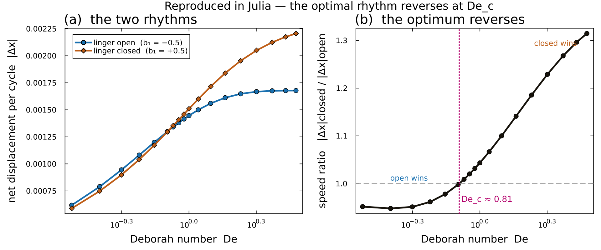
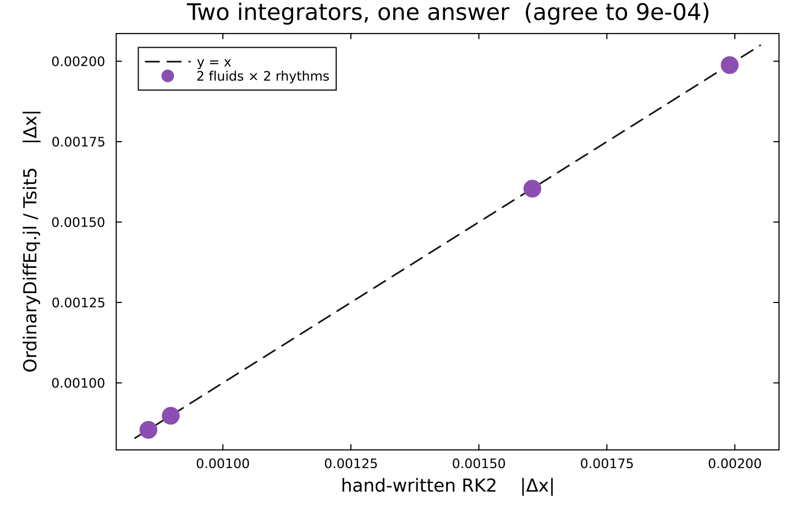
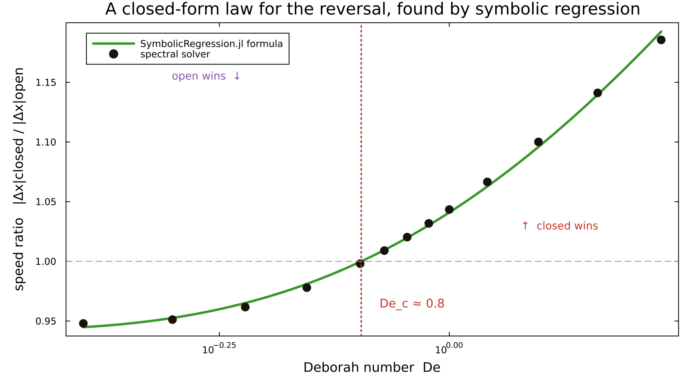
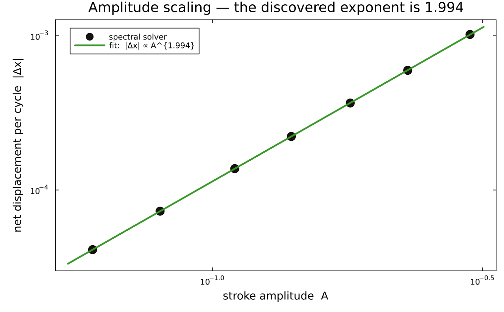
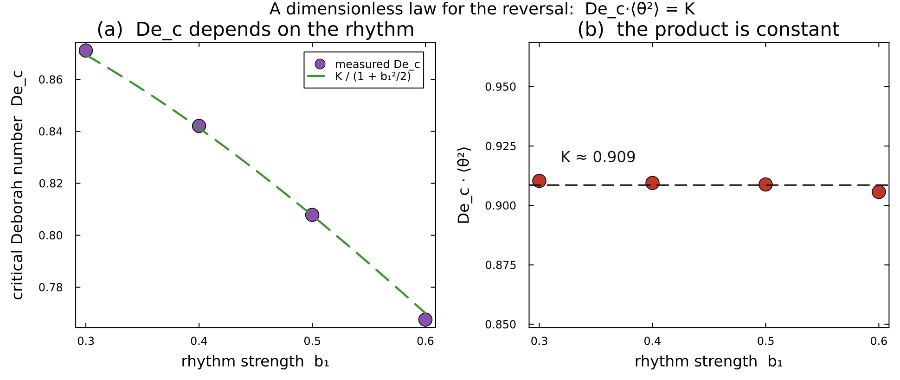

A viscoelastic microswimmer's optimal stroke rhythm reverses as the fluid's memory grows. We reproduced the whole result in Julia — a second language and a second FFT library — and it agrees with the original NumPy solver to eight significant figures.
A two-bead reciprocal swimmer cannot move in an ordinary fluid (Purcell's scallop theorem). Fluid elasticity breaks the theorem, and now timing matters: at low memory the swimmer should linger open; at high memory, linger closed. The optimum reverses.
The spectral Stokes/Brinkman–Oldroyd-B solver is re-implemented in pure Julia (only FFTW). No part of the Python is called — the FFT algebra, the analytic Stokes/polymer velocity split, the RK2 update and the 2/3 dealiasing are all re-derived, with FFT conventions matched to NumPy.
Sweeping the Deborah number for the two mirror rhythms, the faster of the two flips from linger-open to linger-closed as memory grows. The speed ratio crosses unity at Dec ≈ 0.809. Every point matches the NumPy solver (crossover_results.json) to the last column below.
| De | Δx open (b₁=−0.5) | Δx closed (b₁=+0.5) | ratio |c|/|o| | winner | Δ vs NumPy |
|---|---|---|---|---|---|
| 0.50 | −9.4494e−04 | −8.9881e−04 | 0.9512 | open | 1.2e−10 |
| 0.60 | −1.0816e−03 | −1.0402e−03 | 0.9617 | open | 4.1e−10 |
| 0.70 | −1.1993e−03 | −1.1729e−03 | 0.9780 | open | 9.7e−10 |
| 0.80 | −1.2983e−03 | −1.2958e−03 | 0.9981 | open | 1.8e−09 |
| 0.90 | −1.3802e−03 | −1.4082e−03 | 1.0203 | closed | 2.9e−09 |
| 1.00 | −1.4467e−03 | −1.5095e−03 | 1.0434 | closed | 4.1e−09 |
| 1.20 | −1.5424e−03 | −1.6799e−03 | 1.0891 | closed | 6.8e−09 |
| 1.50 | −1.6214e−03 | −1.8657e−03 | 1.1507 | closed | 1.0e−08 |
| 2.00 | −1.6679e−03 | −2.0497e−03 | 1.2289 | closed | 1.3e−08 |
N = 192, amp = 0.35, Brinkman ℓ = 0.5, nsteps = 600. The analytic velocity split makes the Stokes part vanish to round-off: ∮Ustokes dt = 1.7×10⁻¹⁶ (the scallop theorem, recovered exactly).

The hand-written RK2 is only one way to march the equations forward. We also pose the conformation field and the swimmer displacement as a single ODE system and hand it to the SciML stack's adaptive integrator (Tsit5). The reversal is a property of the physics, not of the time-stepper.
Integrated with OrdinaryDiffEq.jl's adaptive Tsit5 at tolerance 10⁻⁷, the net displacement matches the fixed-step RK2 to 0.09% — the same answer from two independent integrators.
Using the SciML integrator alone, the speed ratio |closed|/|open| is 0.951 at De = 0.5 (open wins) and 1.240 at De = 2.0 (closed wins) — the reversal, reproduced end-to-end through the SciML stack.

We handed the speed-ratio curve r(De) to SymbolicRegression.jl and asked it to discover a closed-form expression. From the data alone it returns a compact formula, and the Deborah number at which that formula crosses unity is the critical point.

Beyond reproducing the effect, the Julia sweeps hand us two clean numbers: the exponent with which swimming speed grows with stroke amplitude, and a dimensionless constant that governs where the reversal happens.
A reciprocal swimmer moves only because elasticity breaks the scallop theorem, and the leading response is quadratic in the stroke amplitude. Sweeping the amplitude of the plain sinusoidal stroke and fitting |Δx| ∝ Ap, the solver returns p ≈ 1.994 — the expected exponent of 2, recovered from the simulation with no theory put in.

Where the reversal sits depends on how strongly the rhythm is modulated (b₁). Measuring the critical Deborah number Dec(b₁) for several rhythm strengths and multiplying by the mean-square phase rate ⟨θ̇²⟩ = 1 + b₁²/2, the product is constant:

# from the repository's julia/ folder julia --project=. -e 'using Pkg; Pkg.instantiate()' # one-time julia --project=. smoke.jl # Julia vs NumPy, to 1e-10 julia --project=. -t auto reversal.jl # the De sweep -> De_c
The solver is ViscoelasticSwimmer.jl (a faithful port of the ~160-line NumPy original); reversal.jl runs the sweep and prints the NumPy comparison; sciml_variant.jl and symbolic_regression.jl add the SciML and symbolic pieces. Everything is at github.com/RajatDandekar/swimmer-rhythm/julia.